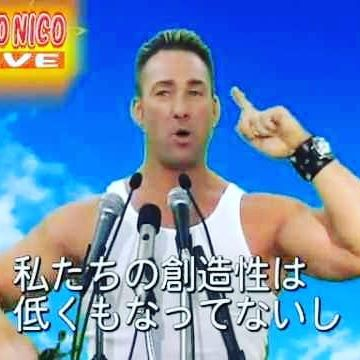

uploaded 20.09.2018
My fellow brothers, I, Billy Herrington, stand here today, humbled by the task before us, mindful of the sacrifices borne by our Nico Nico ancestors.
We are in the midst of a crisis. Nico Nico Douga is at war against a far-reaching storm of disturbance and deletion. Nico Nico's economy is badly weakened: a consequence of carelessness and irresponsibility on the part of acknowledgement, but also on the collective failure to make hard choices and to prepare for a new, MAD age.
Today, I say to you, that the challenges are real, and they are many. They will not be easily met, or in a short span of time, but know this, Nico Nico: they will be met. In reaffirming the greatness of our site, we understand that greatness is never given, our journey has never been one of shortcuts. It has not been for the faint-hearted, or who seek the fleshly pleasures. Rather, it has been the risk-takers, the wasted genii, the creators of MADthings. For us, they toiled in sweatshops, endured the lash of the spanking. Time and again, these men struggled, and sacrificed, so that we might... L I V E B E T T E R .
We remain the most powerful site on the Internet, our minds no less inventive, and services no less needed than they were last week, or yesterday, or the day before the day after tomorrow. Starting today, we must pull up our pants, dust ourselves off, and begin again the work of remaking Nico Nico Douga.
Now, there are some who question the scale of our ambitions, who suggest our server system cannot tolerate too many movies. Their memories are short, for they have forgotten what Nico Nico already has done, what free men can achieve when imagination is joined to common purpose.
And so, to all the people who are watching this video, from the grandest cities, to the small villages where IKZO was born, know that Nico Nico is a friend to every man who seeks a future of love and peace. Now we will begin, to responsibly leave authorized common materials to Nico Nico people, and forge a hard-earned peace in this MAD world.
What is required of us now is a new era of responsibility. This is the price, and the promise, of Nico NiCommons citizenship. Nico Nico Douga, in the face of common dangers, in this winter of our hardship, let us remember these timeless words: ASS, WE CAN.
Let it be said by our children's children, that when we were tested by DOS attacks, when we were refused by YouTube, that we did not turn back, nor did we falter, and we carried forth that great gift of freedom be delivered, and safely to future generations.
Thank you. God bless, and God bless Nico Nico Douga.